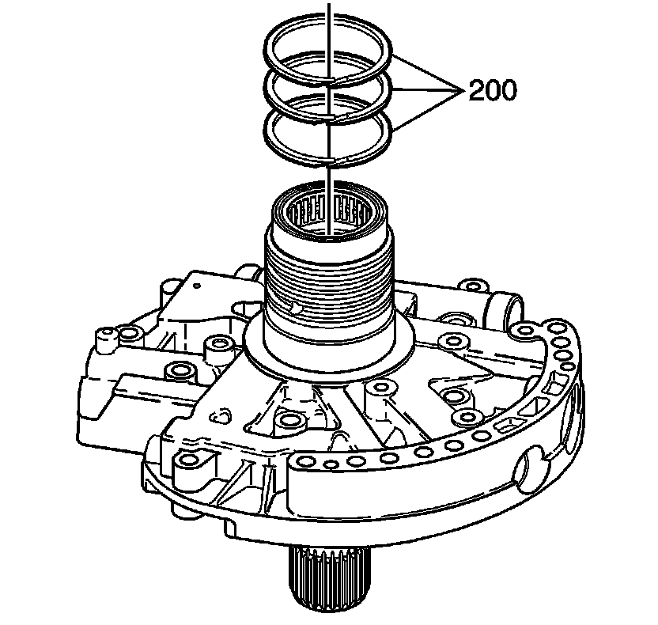
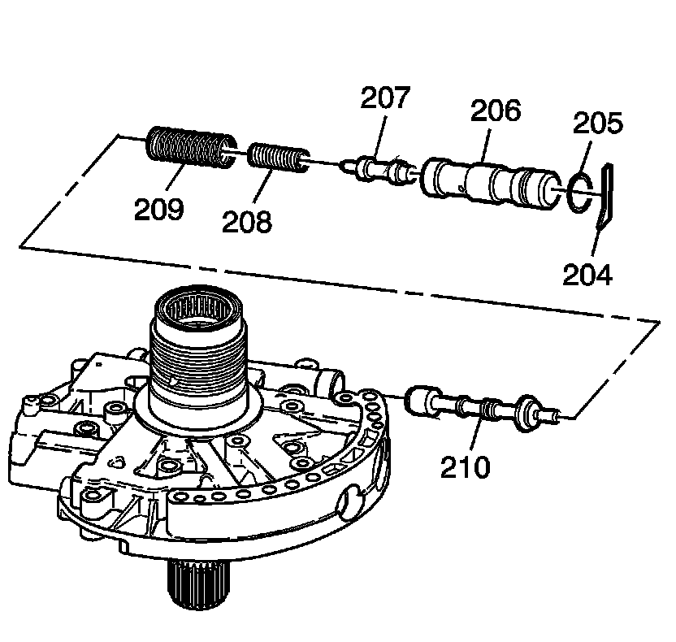
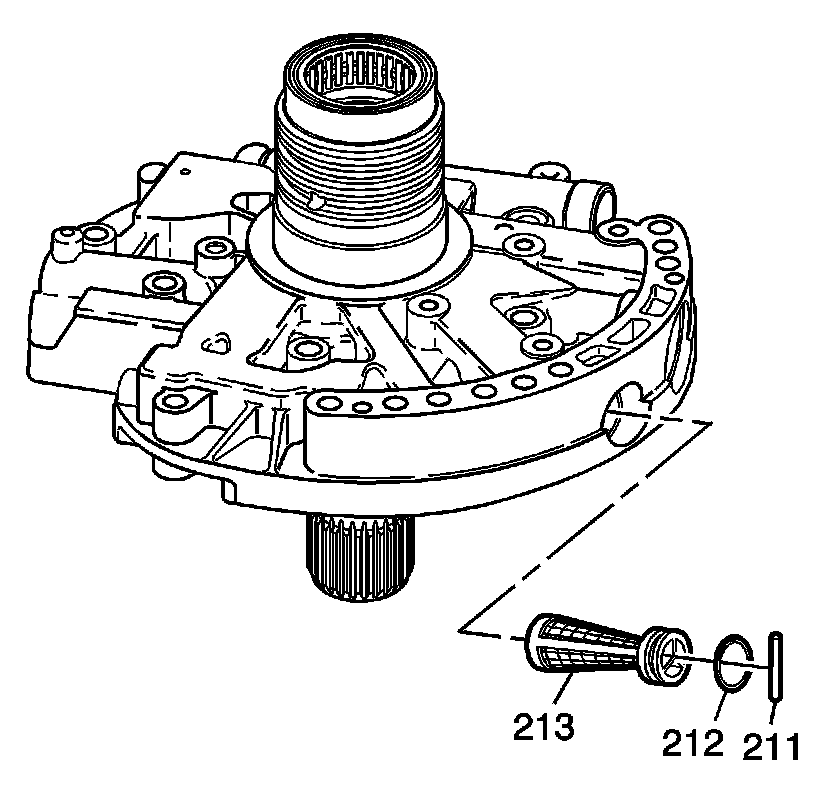
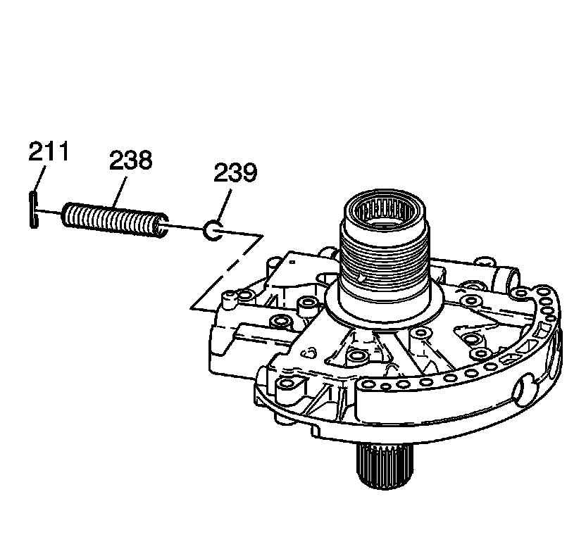
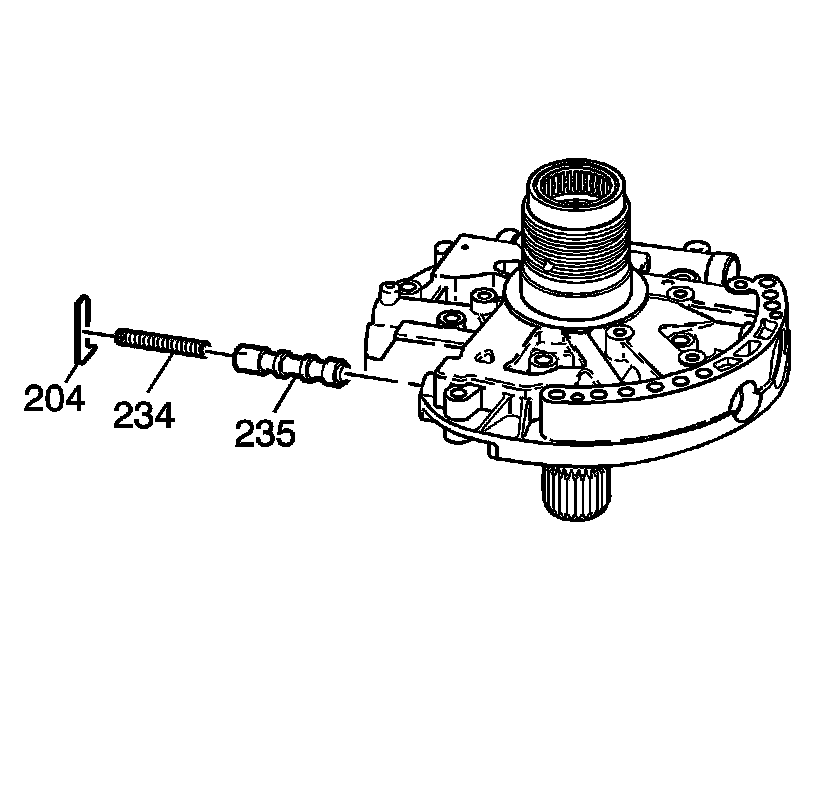
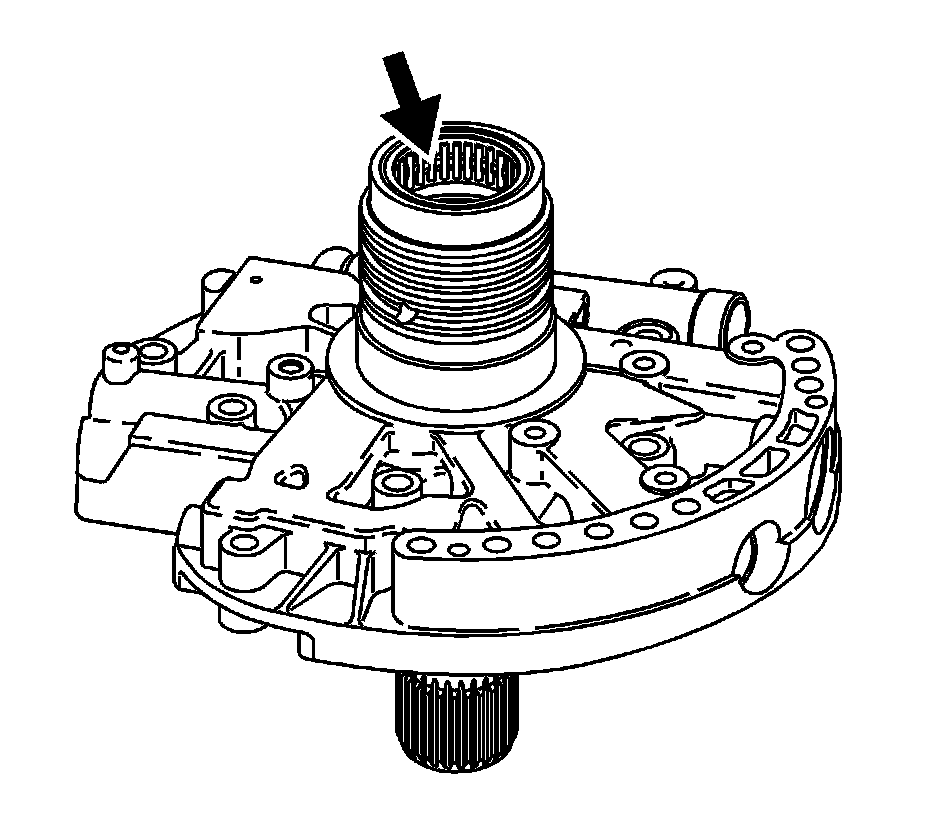

Transmission Fluid Pump Disassemble
Transmission Fluid Pump Disassemble

1. Remove the reverse clutch housing seal rings (200).

2. Remove the line boost valve retainer (204).
3. Remove the line boost valve bushing (206) and the line boost valve (207).
4. Remove the line boost valve bushing seal (205).
5. Remove the line boost valve spring (208) and the pressure regulator valve spring (209).
6. Remove the pressure regulator valve (210).

7. Remove the fluid pump cover screen pin (211).
8. Remove the pump cover screen (213).
9. Remove the fluid pump cover seal (212).

10. Remove the pressure relief ball pin (211).
11. Remove the pressure relief spring (238) and the pressure relief ball (239).

12. Remove the TCC control valve pin (204).
13. Remove the TCC control valve spring (234) and the TCC control valve (235).

14. Inspect the input shaft bearing for the following:
* Damaged bearing cage
* Pitted bearings
* Scored bearings